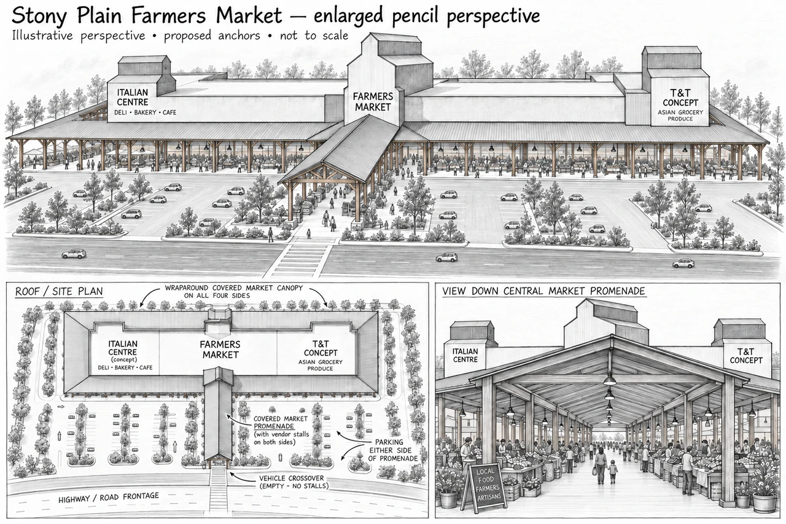
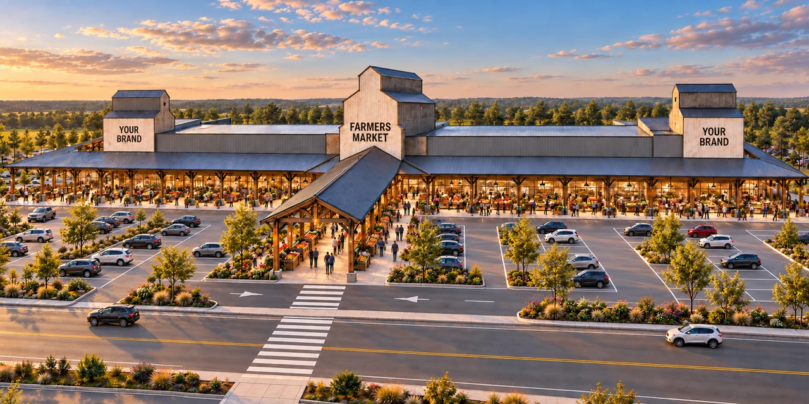
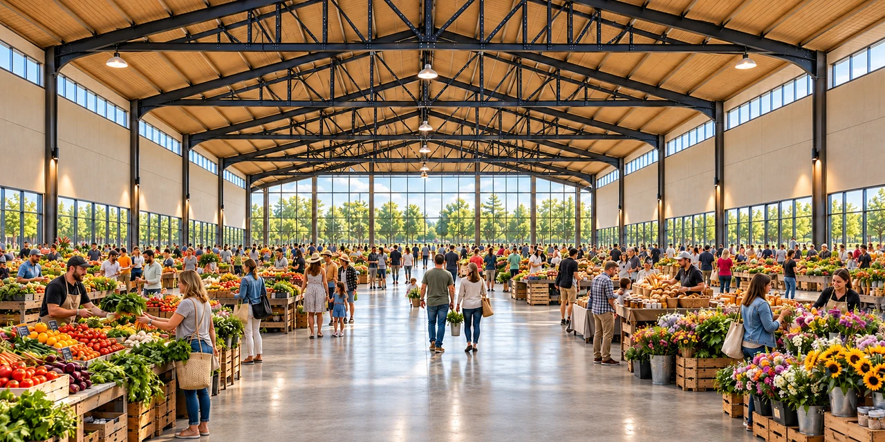
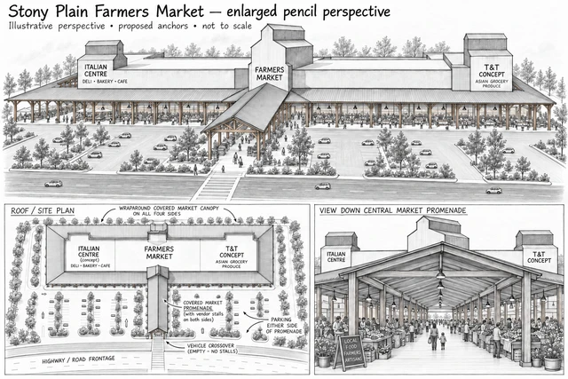

Room for your
flagship experience.
25,000 sq ft
One end of the proposed market. Explore a full grocery offer, specialty food destination, retail-and-dining concept or another brand-led experience.
Discuss Anchor AThe Opportunity / October 2025 concept
Two flagship anchor positions. One extraordinary market destination.
Anchor names in the sketch are earlier illustrative examples. Both positions are open to other brands.
Explore your opportunity ↓

A proposed destination / Stony Plain, Alberta
Two anchor positions. A 75,000-square-foot farmers market between them. An opportunity to create a flagship that people come to experience.
A proposed Canadian showpiece for food, discovery and your brand, with approximately 120,000 sq ft of enclosed, single-storey space.
Two bookends. One shared destination.
The blocks reflect proposed area proportions. This is a layout illustration; the site, access and final tenant configurations remain to be developed.
From pencil to place
The ambition is the West Edmonton Mall of farmers’ markets in Canada: a place with variety, energy and discovery, anchored by stores that give people a reason to return throughout the week.

Your storefront, your format, your experience. The two anchors frame the market, while permanent outdoor roofs extend its life beyond the hall.

One open hall. Movable stalls, fresh food and local enterprise. A flexible interior with no second floor or perimeter mezzanine, connected to the covered outdoor market.
Proposed concept visualizations; the images illustrate atmosphere and architectural intent rather than surveyed dimensions. The West Edmonton Mall comparison expresses the ambition for destination appeal, with no proposed affiliation or established operating performance.
Explore the full vision and market experience →Choose a bookend
Two distinct anchor positions connect directly to the market experience. Start with the space that suits your format; shape the rest together.
25,000 sq ft
One end of the proposed market. Explore a full grocery offer, specialty food destination, retail-and-dining concept or another brand-led experience.
Discuss Anchor A20,000 sq ft
The opposite end of the proposed market. Explore a format that makes the most of your products, your customer journey and a connection to local food and makers.
Discuss Anchor BThese are proposed space allocations, open to discussions about tenant needs. Earlier studies illustrated Italian Centre Shop and T&T Supermarket; they are examples, not committed tenants. Other operators are invited to explore either anchor position.
Proposed enclosed allocation: Anchor A 25,000 sq ft · Central market 75,000 sq ft · Anchor B 20,000 sq ft.
Built around your brand
Shape the layout, fit-out, product offer and customer journey around your brand. Bring your own concept, or explore how a food, grocery or destination retail format could work here.
Explore the customization possibilities →Start the conversation
Tell us the format you have in mind. We can begin with your preferred position, space needs and what would make this a compelling home for your brand.
Project enquiries
Tim Latimer · tim@businessasaforceforgood.ca
Let’s discuss the position and format that best suit your brand.
Discuss the opportunityOpens your email app. Include your company, proposed concept and contact details.
How the concept evolved
The enlarged pencil study, original drawings, earlier master plans and the architect’s vision remain available. Their earlier upper-floor concepts are historical; the current opportunity is a single-storey development.
